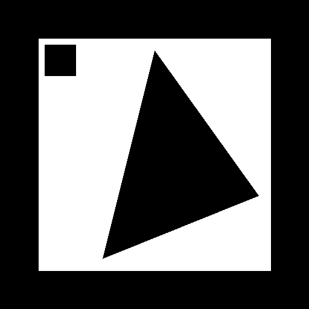

Um fragmento do "Espaço Digital" materializa-se no teu espaço físico.
Esta experiência explora a fronteira entre o mundo real e o sintético —
um núcleo de informação que orbita e pulsa de forma autónoma, como se
respirasse dados.

Imprime ou mostra este marcador no ecrã de outro dispositivo.
Ficheiro: marker-pattern.png
1. Permite o acesso à câmara quando pedido.
2. Aponta a câmara para o marcador acima.
3. Mantém o marcador bem iluminado e visível no enquadramento.
4. O núcleo aparecerá a orbitar e a pulsar sobre o marcador.